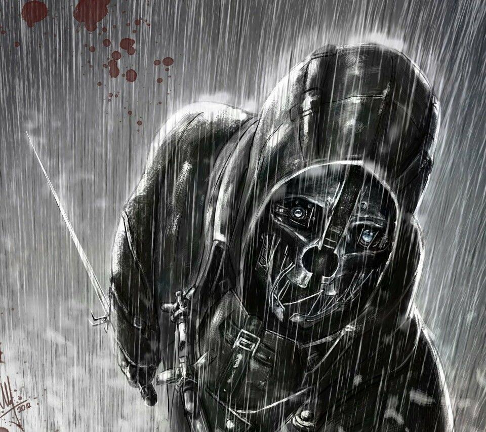

A Dishonored,A Begining

A Dishonored,A Begining
About the ending
- 完美结局-低混乱：公主夺回王位，两位科学家成功治好鼠疫，天下太平，主角幸福的过世。要求：杀人数低，最后一关成功救出公主；
- 完美结局-高混乱：公主夺回王位，但一片混乱景象。要求：高杀人数，公主救出；
- 黑暗结局-高混乱：国家被鼠疫和混乱所笼罩，主角离开了帝国。要求：高杀人数，公主救出失败。
- DLC1——顿沃城审判：这个扩展包包含有10个挑战地图，考验玩家的战斗、匿踪和机动技巧。充分利用主角的超自然能力、武器和装备，消灭尽可能多的目标。此外还有一堆新的成就和奖励以及新增加的全球在线排行榜。
- DLC2——顿沃城之锋:《耻辱》的第二个DLC《顿沃城之锋》（The Knife of Dunwall）将把重点放在由Daud领导的超能力刺客组织“The Whalers”身上，增加了新的能力、武器和装备，探索顿沃城更多的地方，而且你在DLC中所作的选择将对最终结局产生影响。
- DLC3——布莱格摩尔的女巫：在《布莱格摩尔的女巫》中，玩家将继续作为传奇刺客Daud的旅途。在识破布莱格摩尔的女巫首领Delilah的身份和意图之后，你动身去阻止她进行一个对于未来的女王Emily的仪式，一旦仪式成功，Delilah就会用Emily的身体控制整个国家。在被你的上尉Billie Lurk背叛之后，你必须依靠正在冲突的两个帮派-死鳗和帽子党，通过各种方法来穿过顿沃城，到达Delilah的要塞。不管你怎么到达目的地，有一件事是肯定的：不管是宽恕还是惩罚，你都将面对皇家守卫和刺客，Corvo Attano。你的能力，武器和道具升级，混乱等级和玩家的行为都将从《顿沃城之锋》通过存档文件来继承。